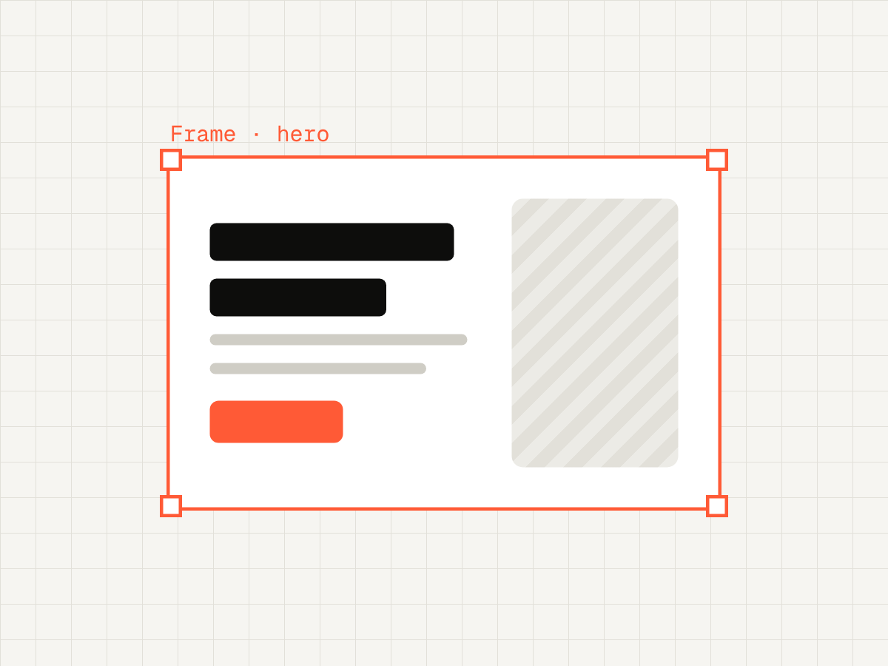
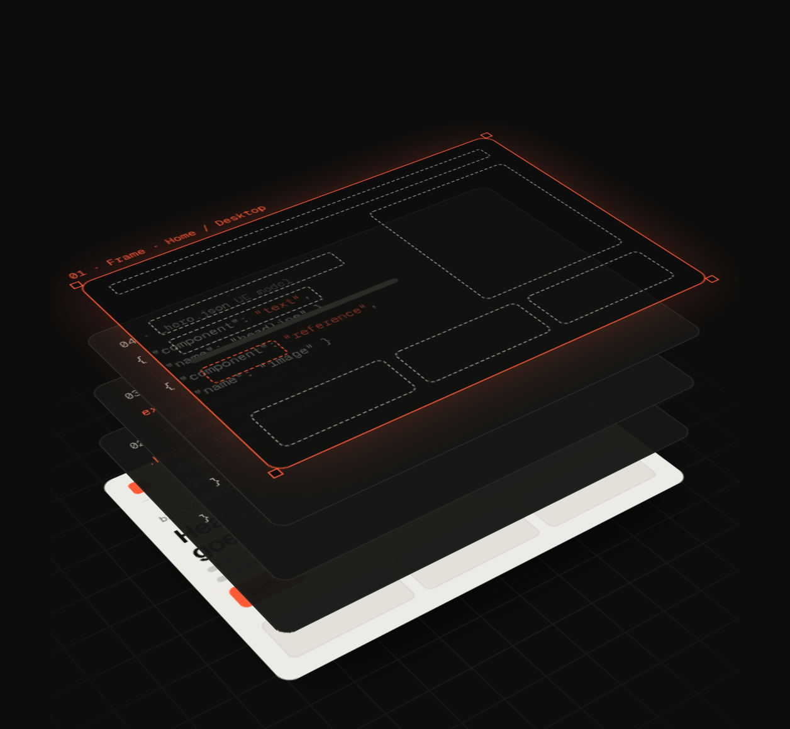
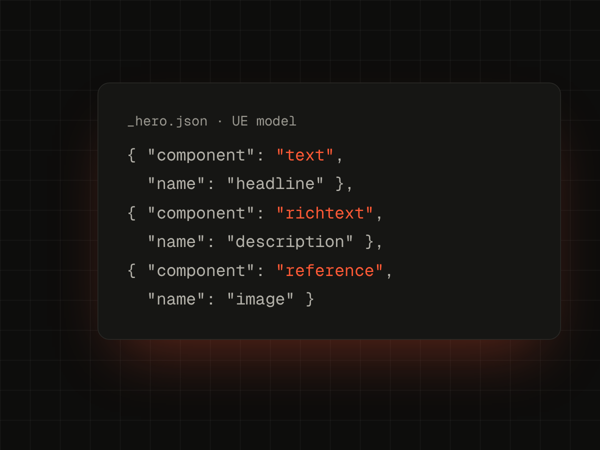
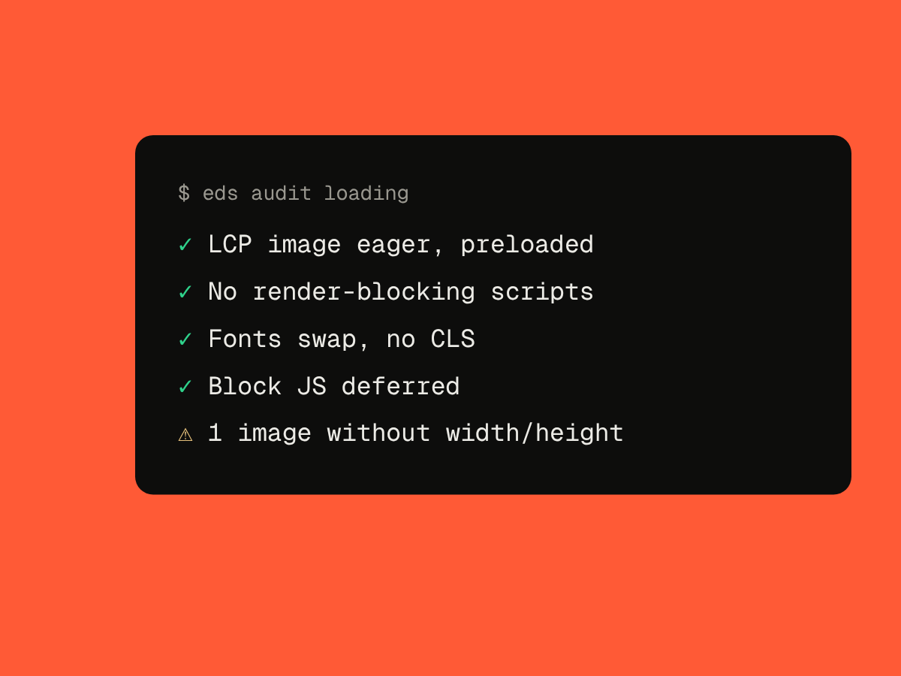
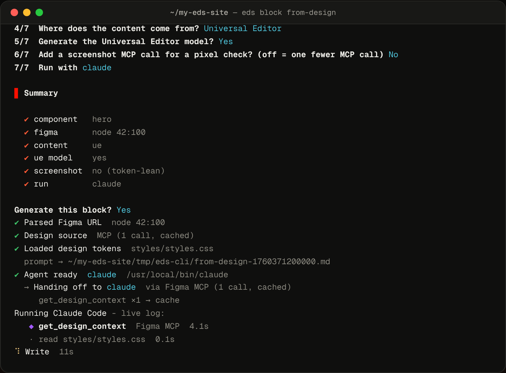

Blocks from a design link
Paste a Figma URL, or a Framer/Stitch page. Your agent writes the JS, CSS and model.
How it works →CLI for AEM Edge Delivery Services
Paste a design link - a Figma URL, or a Framer / Stitch page. Figma is read via MCP/REST; Framer and Stitch are scraped with headless Chromium. Your AI agent writes the block - JS, CSS and a Universal Editor model - straight into your repo.

What it does
Fetch the design once, generate the block with its Universal Editor model, then check it before review.

Paste a Figma URL, or a Framer/Stitch page. Your agent writes the JS, CSS and model.
How it works →
Text, image and variant layers mapped to UE fields - 17 field types, multifields included.
Field reference →
Doctor, loading and security audits - locally or in CI. Security exits non-zero on critical and high findings.
Audits →With @adobe/aem-cli
aem up still serves your site. eds adds what's around it: scaffolding, blocks from design, Universal Editor models, audits and preview.

Content sources
The default EDS model: authors write in documents and the block reads the table rows.
$ eds block from-design <url>
✔ content document
eds writes _hero.json next to the block, so authors edit the headline, description and image in place.
$ eds block from-design <url> ✔ content ue ✔ ue model yes
Point the block at a Content Fragment model or a GraphQL persisted query - or mix it with Universal Editor fields.
$ eds block from-design <url>
✔ content cf
FAQ
No. It's a dev tool only - zero bytes in your bundle, zero LCP impact.
No - by default your AI agent reads the design through its Figma MCP connection, one call per block, then cached. A Figma token switches to the REST API and its larger quota.
Claude Code, Cursor and Codex. Force one with --agent, or use --agent none to just save the prompt.
Yes. Every command supports --json, and audit security exits non-zero on critical or high findings.
Everything you name and structure in Figma directly influences the generated code.